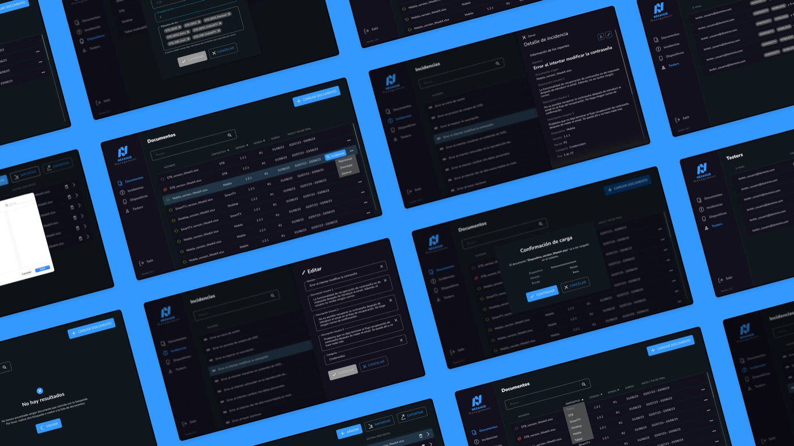
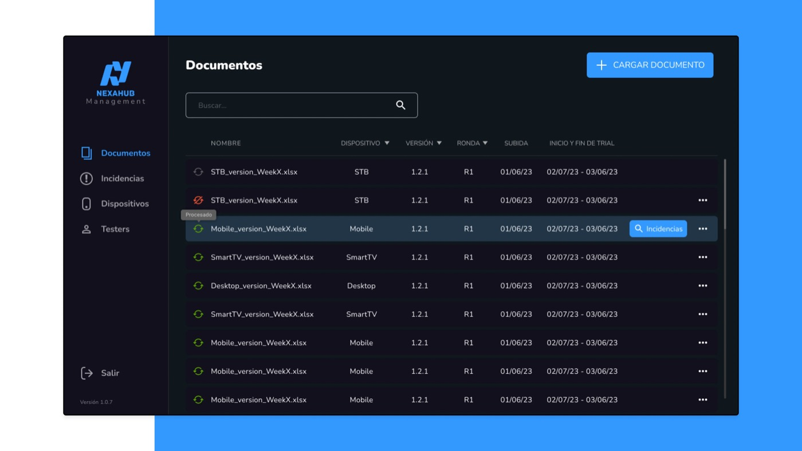
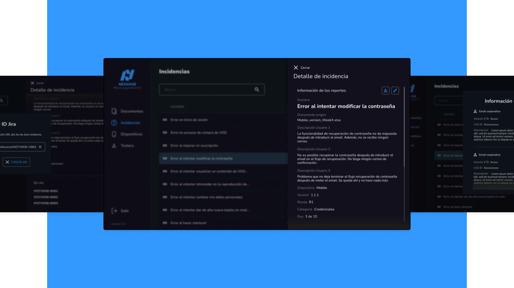

↳ Contexto
Nexahub identificó la necesidad de mejorar la eficiencia en la gestión de incidencias de JIRA entre sus usuarios FUT. Aunque inicialmente no era prioritario, el objetivo a largo plazo era convertir este CMS en una herramienta esencial a nivel global — respondiendo a la estrategia de invertir en mejoras técnicas y de diseño.
↳ Ejecución
Junto con mi equipo, centramos la estrategia en entender con detalle las necesidades y el flujo de trabajo de los QA Engineers en cada paso. Mediante técnicas de shadowing, buscamos comprender a fondo estos aspectos y traducirlos en una interfaz efectiva e intuitiva. Para lograrlo, propusimos una serie de flujos de usuario, incorporando las interacciones necesarias en cada paso, capturando a la vez los elementos clave de la marca de Nexahub — todo ello mediante componentes e iconos iterables que contribuyeron a construir un design system.


↳ Resultado
El resultado fue el lanzamiento exitoso del nuevo CMS en la intranet de Nexahub. El proyecto no solo cumplió sus objetivos, sino que mejoró la eficiencia de comunicación y la trazabilidad de las incidencias de JIRA. La nueva interfaz ofreció una experiencia más fluida, intuitiva y agradable, reforzando su lugar dentro de la marca de Nexahub.

Este proyecto ha sido revisado para proteger información confidencial, siguiendo los términos de uso justo.
Contenido bajo NDA
Este proyecto es para un cliente y su contenido es confidencial. Introduce la contraseña para verlo.